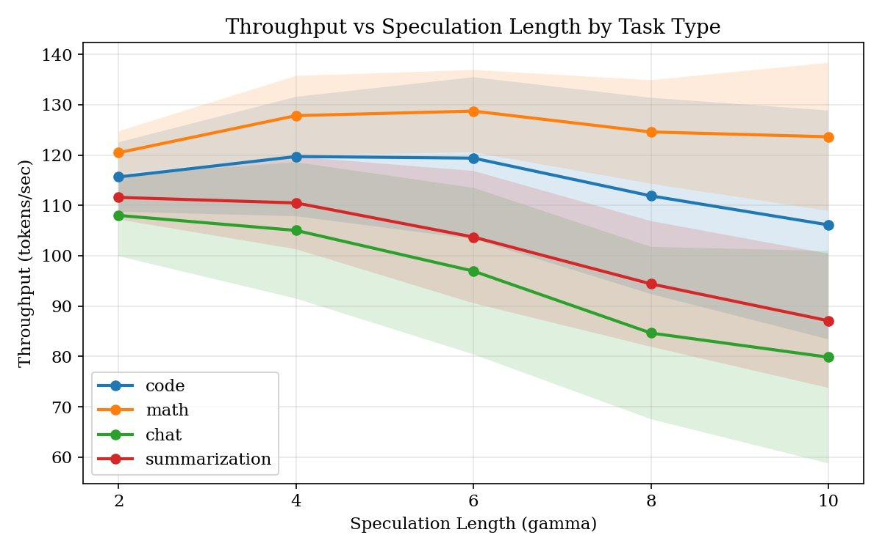
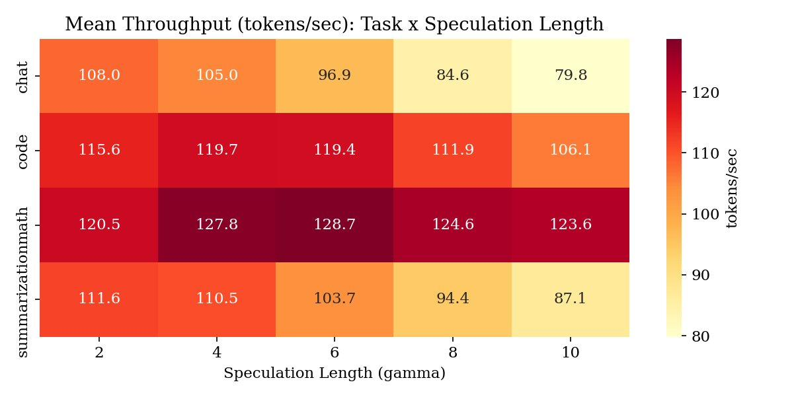
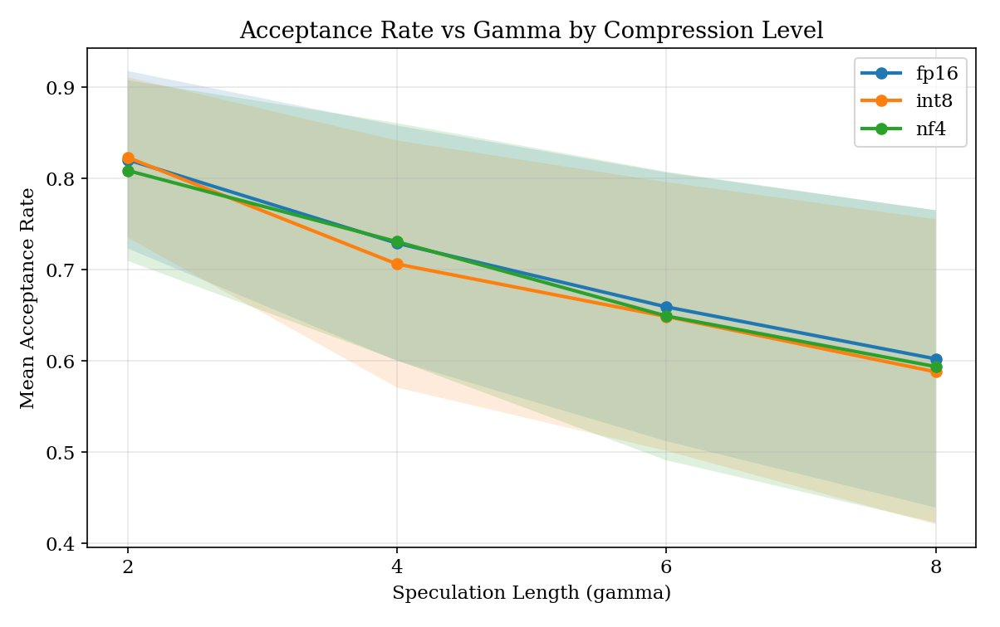
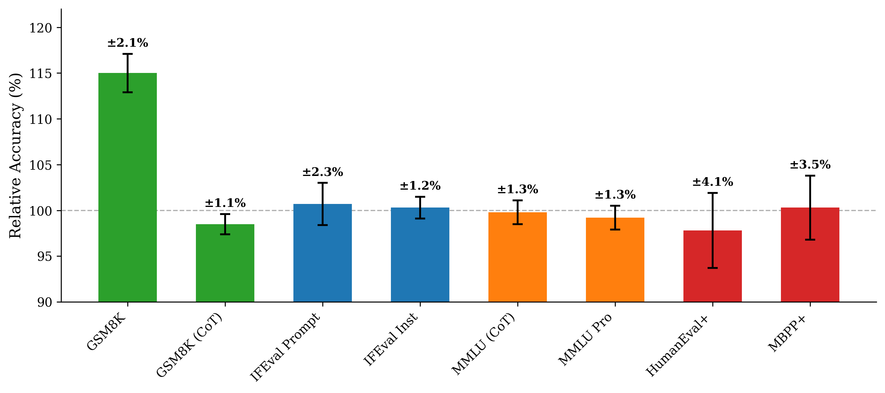
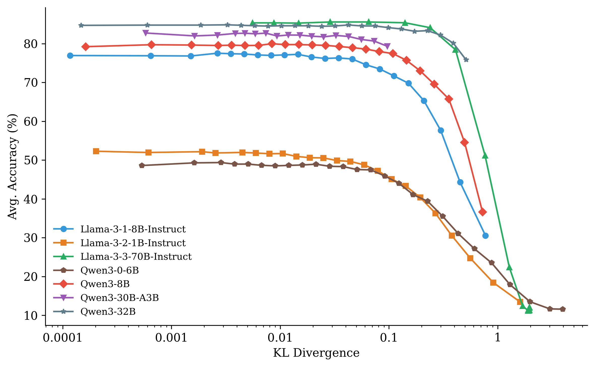
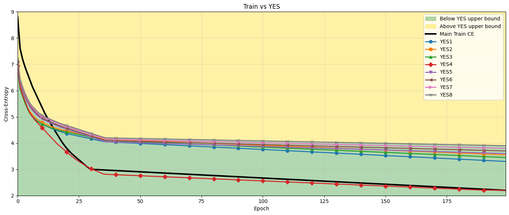
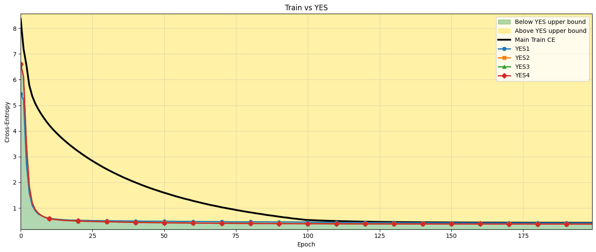
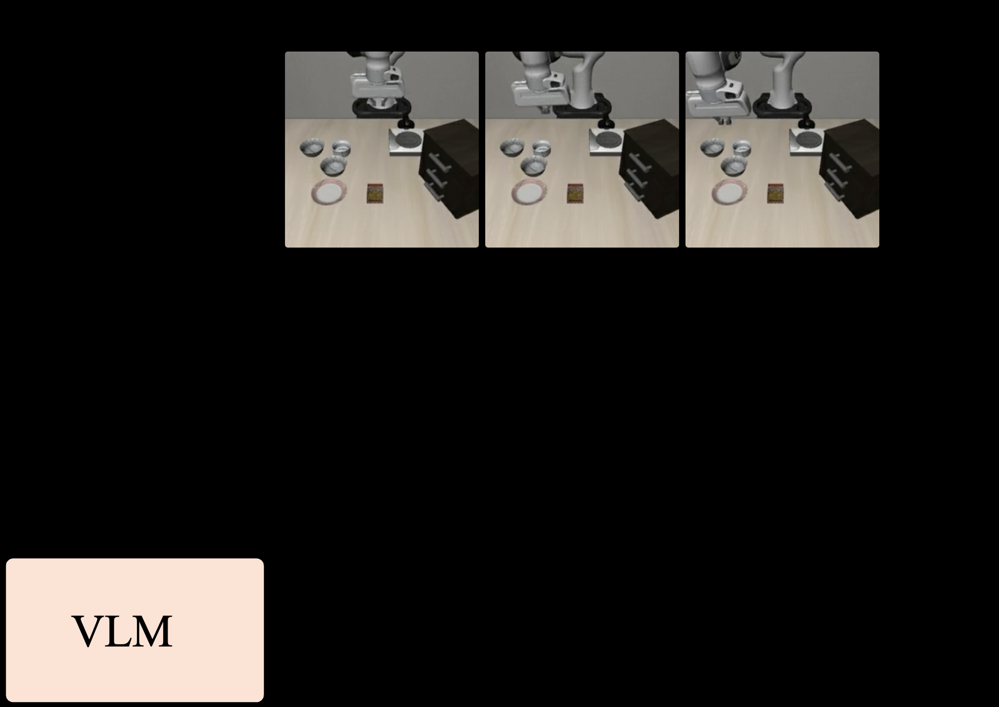
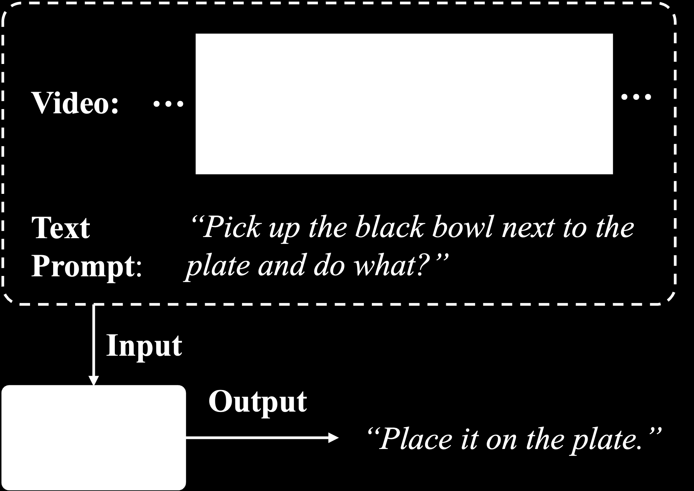
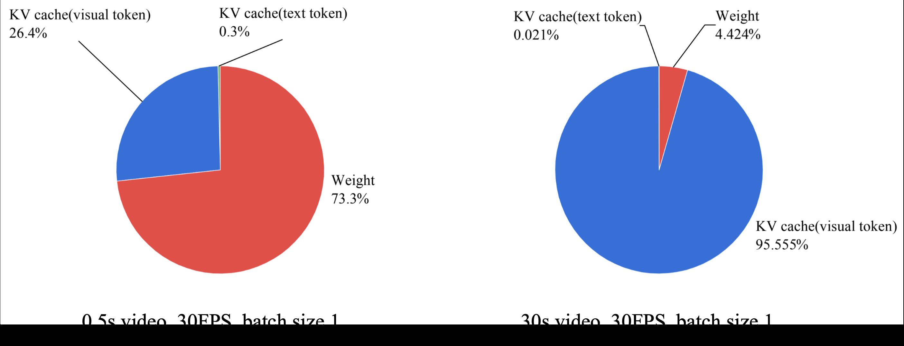

🎯 背景
投机解码通过使用小型草稿模型提出候选token来加速大语言模型推理。关键超参数是猜测长度γ，决定每步草稿模型提出多少token。几乎所有现有系统使用固定的γ（通常为4），但经验证据表明最优值因任务类型和压缩级别而异。
💡 动机
现有固定γ的投机解码系统未考虑目标模型压缩级别对最优猜测长度的影响。作者希望开发一个轻量级自适应控制器，根据草稿模型信号动态选择γ，以最大化每步期望token数。
🔧 技术点
1. 自适应γ选择：使用从草稿模型提取的信号（熵、置信度）预测接受率，训练小型MLP为每步选择最优γ。2. 压缩感知：在FP16、INT8、NF4三种压缩级别下分析最优γ的偏移。3. 低开销决策：每决策仅0.34ms开销（<0.5%步时间）。
📈 收益点
在4类任务、4种猜测长度、3种压缩级别上收集5,112条步级记录。相比固定γ=4基线，SpecKV实现56.0%的提速，统计显著（p<0.001）。
📝 总结
SpecKV首次将压缩级别纳入投机解码的自适应决策，通过草稿模型信号动态选择最优γ，显著提升推理效率。



🎯 背景
模型量化对高效LLM部署至关重要。现有方法如GPTQ和AWQ是损失性的，而无损技术虽保真但不加速推理。如何在压缩率和保真度之间取得平衡仍是开放问题。
💡 动机
作者探索统计无损压缩的中间地带，提出三种互补的无损概念：任务无损、分布无损，并设计可直接解释的保真度指标EAR（期望接受率），以指导量化策略选择。
🔧 技术点
1. 任务无损压缩：在零样本基准精度保持自然采样方差内，实现低至3.3 bits/参数的压缩。2. 分布无损压缩：要求量化模型与原模型下一token分布几乎不可区分，提出EAR指标。3. SLQ方法：逐层非均匀非对称量化，配合宽位宽搜索，平均5-6 bits实现分布无损。4. 优化内核：相对FP16实现1.7-3.6倍推理加速。
📈 收益点
任务无损压缩低至3.3 bits/参数；分布无损压缩平均5-6 bits；推理加速1.7-3.6倍。代码开源：https://github.com/IST-DASLab/SLQ。
📝 总结
SLQ通过严格定义统计无损概念和非对称逐层量化，在极低bitwidth下实现接近无损的LLM压缩，兼具高保真度和实际推理加速。


🎯 背景
理解深度神经网络是否有效优化仍然困难，训练发生在高度非凸的 landscape 中，标准指标提供的学习质量可见性有限。这对Transformer语言模型尤为严重——训练昂贵、模型常被冻结复用，优化不足的层会静默降低性能。
💡 动机
现有训练监控方法只能看到聚合损失曲线，无法诊断层级的优化问题。作者希望提出一种逐层剥离框架，能够检测训练动态中的低效优化，特别是在二值化和量化设置中。
🔧 技术点
1. 逐层剥离框架：为每个Transformer层构建轻量级参考解，将层投影到多个中间输出。2. 可达成基线：通过不同排列获得细粒度的层优化诊断。3. 量化鲁棒性：在二值化和量化设置下验证分析有效性，此时训练动态特别脆弱。4. 收敛与最优分离：提出的界限一致地区分表面收敛与实际最优性。
📈 收益点
在decoder-only Transformer模型上，层参考界限在训练各阶段匹配甚至超越训练模型，暴露聚合损失曲线隐藏的优化低效问题。在二值化和量化设置下仍保持有效。
📝 总结
该框架通过逐层参考解实现细粒度训练监控，能够识别传统损失曲线无法发现的优化问题，对低比特Transformer训练具有重要指导意义。


🎯 背景
视频语言模型(VLM)的视觉token序列过长，导致推理延迟和GPU内存占用不可接受。KV缓存是VLM推理的内存瓶颈，现有混合精度量化方法未充分利用视觉token的局部相似性。
💡 动机
VLM中相邻视觉token具有高度相似性，但现有KV缓存量化方法未利用这一特性。作者希望基于窗口级相似性设计混合精度量化策略，在保持精度的同时显著降低内存占用。
🔧 技术点
1. 窗口级相似性分析：识别相邻视觉token的相似模式，为不同窗口分配不同精度。2. 混合精度KV缓存量化：对高相似性窗口使用低精度（如INT4），对关键窗口保持高精度（如FP16）。3. 动态精度调整：根据内容复杂度自适应选择量化策略。4. VLM专用优化：针对视觉-语言融合任务设计。
📈 收益点
在主流VLM上验证，WindowQuant显著降低KV缓存内存占用，同时保持视觉理解任务的精度。相比统一精度量化，混合策略在精度和效率之间取得更好平衡。
📝 总结
WindowQuant利用视觉token的局部相似性实现混合精度KV缓存量化，为VLM的高效推理提供了针对性的内存优化方案。



🎯 背景
大语言模型在多个领域表现出色，但其巨大的计算和内存需求阻碍了在资源受限环境中的部署。知识蒸馏通过将大型教师模型的知识转移到小型学生模型来解决这一问题。然而，现有蒸馏方法通常对所有token一视同仁，忽略了不同token的学习难度差异。
💡 动机
不同token的学习难度和重要性差异显著。简单token不应消耗过多蒸馏资源，而困难token需要更多关注。作者希望基于熵引导的自适应策略，实现token级别的差异化知识迁移。
🔧 技术点
1. 熵引导机制：利用学生模型对token的预测熵衡量学习难度。2. 自适应权重分配：高熵token（困难）分配更高蒸馏权重，低熵token（简单）降低权重。3. 教师-学生对齐：动态调整蒸馏损失，优化知识传递效率。4. Token级知识转移：在token级别而非序列级别进行蒸馏。
📈 收益点
在多个LLM蒸馏任务上验证，EGAD相比均匀蒸馏策略显著提升学生模型性能，特别是在困难token的预测准确性上。资源消耗不变的情况下提高蒸馏效率。
📝 总结
EGAD通过熵引导的自适应蒸馏策略实现token级别的差异化知识迁移，在资源受限场景下提升LLM蒸馏效率，为学生模型训练提供了更精细的优化方法。